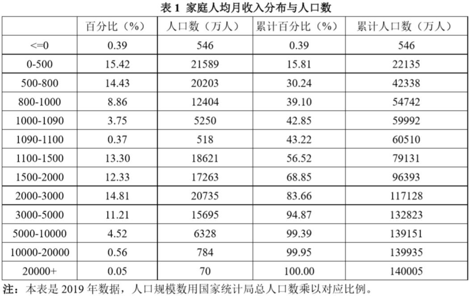

超过一季度没发《每周转载》了，今天赶紧发一篇，聊聊2020年的网络热词“内卷”。
本文转载的文章，很大部分来自【墙内】网站。为了防止这些文章将来被真理部“和谐”掉，俺对每篇转载的文章都标注了“网页存档”的链接。
《人类学家项飙谈内卷：一种不允许失败和退出的竞争 @ 澎湃新闻》（网页存档）
（编程随想注：以下是该报道的部分摘录，段落内部的粗体是俺标注滴）
针对上述摘录的最后两段（竞争的【三角关系】），再稍微补充几句——
天朝的特色是：先通过洗脑，让大多数人都认同某个【高度一元化】的评价体系，于是大多数人都愿意为该评价体系内的某个目标付诸毕生的努力。当绝大部分人的目标高度【同质化】，就如同大部分人都挤在同一个赛道上，自然会有【无谓的内耗】——这就是“内卷”的根源。
通过这种方式，极少数人（权贵）可以实现对大多数人的【奴役】。而大多数人深深地陷入“内卷”的困境（陷入内耗），当然没有精力去思考为啥他们会深陷这种困境。如果他们没有精力去思考，就更加不可能去反抗。
不得不感叹：这是一种高明的奴役方式！
俺上述这些分析，对于项飙同学这种聪明人，当然也明白。但为啥他在这篇访谈中没有说破捏？很简单，如果他把这层窗户纸捅破（道出问题的根源），这篇访谈直接就被真理部封杀了，根本发不出来。
大约十年前（2011年左右），俺就一直唠叨这样一句话：你可以不关心政治，但是政治会来关心你。如今大部分人都深陷于“内卷”的困境中，充分体现出“政治体制对每个人的影响”。
刚才俺提到了“一元化的评价体系 ＆ 高度同质化的目标”。但光有这些还不够。为了让大部分屁民死心塌地参与到无意义的内耗中，还需要用一些心理学招数作为辅助手段。比如说：如今很多人都有严重的【焦虑感 ＆ 不安全感】。
本章节分享“天朝社会的财富分布”，有助于你更好地理解这种“焦虑感 ＆ 不安全感”。
《统计局回应6亿人月收入1000元：有数据印证 @ 财新网》（网页存档）
（编程随想注：以下是该报道的全文）
《中国人的收入到底有多高 @ 网易》（网页存档）
（编程随想注：以下是该报道的部分摘录，粗体是俺标注滴）
编程随想注：
上述这篇分析了：为啥“家庭人均可支配月收入超过2万”，仅仅才70万人，占全国总人口不到千分之一（再次提醒注意：【家庭人均】和【可支配】这两个定语）
虽然这这70万人已经可以算是【金领】，但即使在这70万人里面，依然存在严重的【两极分化】。请看如下这篇文章。
《银行年报透露高端客户资产信息——14万人拥有3万亿存款，人均2000万 @ 搜狐》（网页存档）
（编程随想注：以下是该报道的部分摘录，粗体是俺标注滴）
编程随想注：
刚才这篇引用的都是大型银行的年报，数据的准确度很高，而且覆盖面很广，具有【统计学意义】。
从数据上看，贫富分化已经非常严重；但俺要提醒大伙儿：以上数据所反应的贫富分化，依然被【严重低估】——
其一，
因为天朝最穷的6亿民众（也就是光头强总理所说的“6亿中低收入人群”），他们中的大部分人，显然没有银行存款。因此，上述三家大型银行的统计数据，无法覆盖到这部分穷人。如果把这部分穷人也算进去，你会发现：富豪在【总人口】中所占的比例，实际上更低。
其二，
如果某人在银行的存款达到【千万级别】，很显然，这笔钱只是此人总资产的一部分。有千万级存款的人，多半还有 N 套房子（N 可能是两位数）。除此之外，通常还会有其它的一些资产组合。甚至包括一些【灰色】资产（很难被统计到的资产）。
综上所述，从“存款统计”看“贫富分化”，依然会严重低估。
在上个月（2020年12月）的博文《学习与人生——700篇博文之感悟》中，俺刚刚吐槽过天朝的“傻逼教育体制”（此处的“傻逼”是双关语——既指“教育的运作方式”，也指“教育的产物”）。
当天朝的各个阶层都在内卷，教育界自然也逃不出这个命运，而且教育界的内卷会更惨烈。因为每个阶层都寄希望于——通过教育来实现阶层上升（或者起码保持阶层不下降）。
7年前（2014年1月）俺曾经写过一篇《为啥急功近利反而赚不到钱——给拜金主义者的忠告》，其中有一句很重要的话：人满为患的康庄大道反而变成羊肠小道，而人迹罕至的羊肠小道却如同康庄大道。当绝大部分家庭都寄希望于“通过教育来改变阶层”，这条路就是上述所说的——“人满为患的康庄大道反而变成羊肠小道”。
俺猜很多读者肯定想问：这下该咋办捏？
在这种局面下，那些足够聪明的人会去寻找“人迹罕至的羊肠小道”——这也就是俺经常唠叨的【间接路线战略】。
《绩点为王——中国顶尖高校年轻人的囚徒困境 @ 搜狐》（网页存档）
（编程随想注：以下是该报道的部分摘录，粗体是俺标注滴）
编程随想注：
在前不久的博文《学习与人生——700篇博文之感悟》一文中，俺专门吐槽过 IT 行业里面的“名校科班精英”（名牌大学计算机系高材生）。大部分“名校科班精英”的工作能力【很差】（只有小部分是真的优秀）。看完上述这篇《绩点为王》，有助于你明白其中的原因。如果连清华北大都如此明显的【高分低能】，其它名牌大学可想而知。
上述文章还提到了“那些考了钢琴十级证书的小孩，几乎没人对音乐有兴趣”。为啥会这样捏？俺在上述《学习与人生》中也谈到了——关于“培训班和补习班的【毒性】”。
另外，很多身为家长的读者，自己并没有理解“什么是兴趣”。建议这些人看看《什么是【真正的】兴趣爱好？以及它有啥好处？》
《刘云杉谈“教育内卷”：教育解决不了社会结构问题 @ 澎湃新闻》（网页存档）
（编程随想注：以下是该报道的部分摘录，粗体是俺标注滴）
编程随想注：
2021年元旦前后，“拼多多”在不到两周时间，发生一起员工猝死以及一起员工自杀。所以本章节转载的文章，大都与“拼多多”有关。
《大厂里的数据奴隶 @ 中国数字时代》（网页存档）
《重磅爆料，我在拼多多的三年 @ 中国数字时代》（网页存档）
《拼多多的厕所上了热搜，996的大厂员工没有如厕自由 @ 虎嗅》（网页存档）
《一位五个月共休息了五天的拼多多员工决定离职 @ 中国数字时代》（网页存档）
《拼多多员工自杀背后——什么在逼迫年轻人至死方休？ @ 新浪》（网页存档）
编程随想注：
俺要提醒大伙儿，天朝的黑心企业太多啦，远远不止“拼多多”这一家。比如下面这篇转载，揭露的是华为。
《每周转载：华为李洪元案——工作996、离职251、维权404（大量网友评论，多图）》
《外卖骑手，困在系统里 @ 新浪》（网页存档）
《外卖骑手被迫加速的驱动之手——AI 还是利益 @ 南方周末》（网页存档）
《自焚的饿了么骑手——工资被扣5000元，多次讨要未果而轻生 @ 新浪》（网页存档）
编程随想注：
“外卖骑手”面临的困境，其实很类似于“996员工”。他们的共同点是——【被压榨到极致】。
为啥这些大企业可以对员工进行如此极致的压榨捏？直接原因是【工会的缺位】。关于这点，俺至少已经写过如下两篇博文，进行深入的分析。
《“996工作制”只不过是【劫贫济富】的缩影——“马云奇葩言论”随想》
《博弈论入门教程——从基本概念到具体案例》
如果你进一步追问：“咱们天朝的工会，为啥会缺位捏？”。更深入的原因，也就是俺经常唠叨的——如今天朝虽然挂着“马列主义 or 社会主义”之类的招牌，其实搞的是【权贵资本主义】的把戏。
开博十多年，俺已经写了几十篇博文了，吐槽党国的政治体制。比如下面这几篇：
《相当奇葩的天朝，【劫贫济富】的国度》
《看看全国人大代表都是啥货色——兼谈“议会道路的改良”行不通》
《习包子露馅——习近平在内的权贵家族如何转移巨额海外资产》
......
顺便说一下：
【墙内】有很多文章对996的问题进行分析，但都【没有】触及上述问题的根源。上述根源不难想到，为啥【墙内】的文章都没有提及捏？还是因为【真理部】——敢于说出问题本质的那些墙内文章，都已经被审查、被封杀了。
因此，如果某个网民只依赖【墙内】的信息来源，就很容易被误导。
《深圳“三和”纪事 @ 网易》（网页存档）
编程随想注：
本文开头转载的那篇《人类学家项飙谈内卷》，其中已经提到了“三和大神”。所以俺专门找来一篇相关的报道。
“三和大神”虽然出自深圳，但在其它一二线城市也有类似的群体。
《杀马特、三和大神、提桶者——二代农民工的出路在哪里？ @ 搜狐》（网页存档）
编程随想注：
如副标题所示，这篇讲的是“大部分农民工子女的现状”。
关于“三和大神”，前面一篇已经介绍过；所谓的“提桶者”指的是——他们的全部家当可以放在一个塑料桶里面。
《我发现了一群都市隐者，栖居在城市的皱褶里 @ 搜狐》（网页存档）
编程随想注：
这篇主要讲“城市中的流浪汉”（无家可归者），介绍他们的生活居所。
当“内卷”越来越严重，必然会产生很多宏观层面的社会问题。由于本篇只是《每周转载》，不是原创博文，俺只简单聊几点：
1. 阶层固化
当“内卷”越来越严重，“阶层固化”也会变得越来越明显。
引申阅读：《点评中国社会九大阶层——没有公平、难以流动、无法稳定》
2. 人口结构恶化
关于这个话题，俺在《“盛大庆典”难掩【内忧外患】——天朝沦陷70周年随想》一文中已经聊过了。考虑到某些老读者比较健忘，某些新读者没看过那篇。再重复唠叨几句。
最近十多年，网上流传一句“高房价是最好的避孕药”。推而广之，“生活压力是最好的避孕药”。
全面放开“二孩”已经好几年了，而生育率依然【猛降】，这就足够说明问题啦。
当生育率持续下降，很多人只关注“总人口数的变化”。其实“人口总数”反而不是最重要滴；比这更重要的是【人口结构】。
如今天朝有着庞大的老龄化群体，而年轻人却越来越少。这个结构非常畸形，并且会让【抚养比】快速恶化（注：“抚养比”越恶化，则每个年轻人的赡养压力越大）
3. 稳定性下降
天朝这种“权贵资本主义”的模式，说到底是建立在【割韭菜】的基础上（广大屁民都是韭菜）。
如今韭菜都不愿意生小孩了。于是在未来几代人，可收割的韭菜会越来越少。到时候，朝廷靠什么来维持庞大的官僚系统？靠什么来维持庞大的维稳经费？
到了某一天，“维稳经费”不够用了，政权的稳定性如何保障捏？
4. 幸福感递减
韭菜减少了，但朝廷的开销不会减少，甚至会变得更多（千万不要低估“官僚系统的贪婪”）。在这种情况下，（平均而言）单棵韭菜遭遇的剥削就变得更沉重了。体现到【代际】这个维度，你就会感觉到“代际间的幸福感递减”。通俗地说：80后比70后悲催，90后比80后悲催，00后比90后悲催......（以此类推）
当幸福感随着代际而递减，从某种程度上也会降低父母的“生育意愿”；于是韭菜会变得更少——最终形成某种消极的正反馈（恶性循环）。
俺博客上，和本文相关的帖子（需翻墙）：
《“政治体制”与“系统健壮性”——基于“复杂性科学”的思考》
《学习与人生——700篇博文之感悟》
《为啥急功近利反而赚不到钱——给拜金主义者的忠告》
《“996工作制”只不过是【劫贫济富】的缩影——“马云奇葩言论”随想》
《相当奇葩的天朝，【劫贫济富】的国度》
《点评中国社会九大阶层——没有公平、难以流动、无法稳定》
《“盛大庆典”难掩【内忧外患】——天朝沦陷70周年随想》
《若政治制度不公平，则经济改革无意义——谈谈天朝这个大赌场》
《什么是【真正的】兴趣爱好？以及它有啥好处？》
《读书笔记：＜反脆弱——从不确定性中获益＞》
《每周转载：华为李洪元案——工作996、离职251、维权404（大量网友评论，多图）》
《看看全国人大代表都是啥货色——兼谈“议会道路的改良”行不通》
《习包子露馅——习近平在内的权贵家族如何转移巨额海外资产》
本文转载的文章，很大部分来自【墙内】网站。为了防止这些文章将来被真理部“和谐”掉，俺对每篇转载的文章都标注了“网页存档”的链接。
★何为“内卷”？
《人类学家项飙谈内卷：一种不允许失败和退出的竞争 @ 澎湃新闻》（网页存档）
（编程随想注：以下是该报道的部分摘录，段落内部的粗体是俺标注滴）
编程随想注：
2020年，可能没有第二个人类学术语比“内卷”更加出圈了，它本来是人类学家解释为什么一个社会或组织既无突变式发展，也无渐进式的增长，只是在一个简单层次上自我重复的概念发明。现在则意味着“白热化的竞争”，人们在日常生活的方方面面拼尽全力，以使自己在社会上获取少量竞争优势，挤占他人的生存空间，同时造成精神内耗和浪费。人们可以在当代生活的方方面面识别出内卷，可以说是从幼儿园一路“卷”到职场、连婚恋也可以“卷到天上去”。
澎湃新闻请到了人类学家项飙来谈谈内卷，今天的内卷和它在被发明之初的含义有什么区别？我们又如何描述当代生活中的内卷？
人类学家项飙非常擅长使用比喻和日常观察来深化和细化我们对于概念的理解。他把内卷描述为一种“不断抽打自己的陀螺式的死循环”，他更是站在人类学视野下竞争的大框架内理解“内卷”，指出内卷现象是人类社会的例外现象，它的背后是高度一体化的缺乏退出机制的竞争。
（编程随想注：这篇文章以问答形式展开。由于篇幅很长，俺只摘录项飙的部分回答内容）
今天的内卷是一个陀螺式的死循环
......
内卷这个概念最早是格尔茨通过对爪哇岛的农业经济的总结里面提出来。他要解释的是为什么农耕社会长期没有大的突破。农耕经济是越来越精细化的，在每个（土地）单位上投入的人力越来越多，我们可能会想象说投入的人力越多，你的产出也会是高的，可实际上这一点的提高，因为人力多投入而增加的产出，就也只够人力本身的消费了，就是说你多了一张嘴就被这张嘴消费了，如此而已。所以就造成了一种平衡状态，多少年一直如此。
为什么叫内卷？是说你在耕作的时候，大家对每一个细节都越来越关注，可是到最后产出跟你投入是没有关系的，甚至是负增长。如果你要到一个荒野上去开垦荒地，粗放地耕种，其实你的产出和投入的比例反而更高。我在读书的时候，我的老师北大孙立平教授就说，你看中国农民，他们种田跟种花一样。精耕细作这四个字，是对亚洲农业很好的概括。后来学者黄宗智研究长江三角洲的及农业经济的发展，他把内卷的概念引到了对中国的农业经济史的分析，他的分析跟 Mark Elvins“高水平陷阱”的意思，基本上是相通的。“高水平陷阱”是说，中国在很早就在农业技术、行政管理，还有社会组织、人力动员方面达到了很高的水平，但它达到高水平之后一直就没有突破。农业的生活和生产方式就没有变化。Mark Elvins 的解释是指在17世纪以后，中国基本上开垦了所有能开垦的土地，土地没有增长，但是人口一直在增长。人口的增长靠什么来维持？主要就是靠精耕细作，靠这种非常内卷的方式。
人口增长是跟文化有关系的，因为我们文化是要多子多福，然后人口的增长倒过来就使得人力变得非常便宜，所以没有技术创新的动力，觉得有事儿就是靠人力。这是中国农业跟欧洲农业很大的一个差别。比如说，扁担在欧洲基本上是不存在的，你找不到扁担这个东西，而中国在任何农业家庭里都有扁担。在欧洲所有重的活都是动物做的，很少需要人做，然后欧洲后来有了蒸汽机，要机械，就是说靠自然的物理的能源来解决。
杜赞奇把内卷的概念转化为行政和政治上。他要解释清朝末年的新政要加强国家的控制，所以它要建各种各样的官僚机构，国家投入了很多钱，建立官僚机构，但是国家基层的行政能力并没有增强，对这个地方社会的服务没有增强。这是国家建设中的内卷。这导致什么后果？它有了那么多的官吏，就不得不从农民那里汲取更多的税务来养这些管理人员。但这些官吏很快就变成拿了工资为自己服务而不是为农村社会服务。最后导致了农村社会的解体和革命，因为攫取越来越多，但是没有反馈。
（编程随想注：上述这段话从“行政治理”的角度谈中国历史的“治乱循环”。同样的话题，俺在更早之前的博文《“政治体制”与“系统健壮性”——基于“复杂性科学”的思考》也聊过，而且比上述更详细，并结合了“复杂系统”的相关理论）
......
如果要跟原来讲的内卷做一个比较，就提出一个新的问题了。传统上谈内卷是说为什么会形成一个高水平陷阱，一代重复一代，从17世纪以后没有竞争，大家都只是维持糊口的水平。
而今天我们看到的，是一个死循环的陷阱，你不是每天都在重复你的工作，你在不断发现新的抹油和辅食的品种，成天在微信群里面看别人在用的最新的东西，你如果重复的话，你心里就很慌。而且孩子不断的长大，选幼儿园就开始烦，然后到了小学就纠结，然后到小升初的时候，就是说是快逼疯的时候了。这个当然跟农耕社会里边的高水平相结合不一样。
如果说原来内卷指的是一个重复的，没有竞争的，不能摆脱农耕社会这么一个结构性格局；那么今天的内卷是一个陀螺式的死循环，我们要不断抽打自己，让自己就这么空转，每天不断地自己动员自己。所以它是一个高度动态的陷阱，非常耗能。在小农社会里面，它体力上很累，但是不会有今天这种在精神上的这种折磨。
......
内卷背后：高度一体化的竞争
......
在职场这个角度，我们可以说内卷是用来对现在资本主义的批判。但是用资本主义这个词太宽泛了，不太精确。因为资本主义最早起源的地方，比方英国，然后现代资本主义发展的最好的，可能是德国，在这些国家并没有出现这种“内卷”现象，所以它是有一点中国特色的。
内卷背后，可能指的是：高度一体化的市场竞争成为生活导向，成为社会的基本组织方式和生活和资源分配方式。
首先当然是市场竞争。但是很多竞争其实不是市场性的，比方说你教育在严格意义上并不是市场性的，考试都是国家或者学校设定的。但是它会模拟市场竞争，把这个东西搞成像市场竞争一样，让大家来参与。
然后“高度一体化”非常重要。我们今天讲的内卷的一个很重要的前提条件是不分化，大家认准一个目标，为同一个唯一的目标活着。否则的话，如果你在职场不高兴，你去干点别的，开个面馆不行吗？不可以，大家一定要挤在一个道上。
大家现在对“三和日结工”其实是有一种恐惧的，就是说你怎么就这样退出竞争了，这个怎么行？（编程随想注：“三和日结工”俗称“三和大神”，后续俺会转载其它文章介绍这个群体）在中国，大家面临的压力不仅是说你要往上走，而且不允许你往下走。最近一位读了研究生的同学告诉我，他去麦当劳应聘，麦当劳看了他的学历之后，第一句话就问：你有没有考虑你父母怎么想。这句话是问得很重的，不是说你这个书都白读了，学费都白交了，直接是牵涉到情感问题和道德问题，好像是一种背叛。就是说你要把自己的社会阶层往下走，在道德意义上是背叛，到了这个程度。
全国人民朝着一个目标去，要多赚钱，要买一百多平的房子，要买车，一定要成家等等。这个线规划好了，大家高度一体化，都要在这样一个市场里面争夺同一样东西。
......
我们的竞争不允许失败和退出
......
如果看一些比较成熟的社会，为什么大家相对安生了？大家安生了并不是因为说大家知道没有希望了，而是说把你的希望你的努力重新分配。你看到自己的特长，看到自己的兴趣，然后有很多不同的渠道，活得好的方式也是很不一样的。大家各自去找渠道，这样的情况下会有安生。他并不是说努力没有用了，而是说大家还是要努力，但是努力的方式不一样，你找出自己的途径来。我们最大的问题是末班车过了，但是我们又不愿意开出新的赛道来。
所谓内卷性不仅仅是说竞争激烈不激烈的问题，而是说白竞争，明明知道最后的收获也没有什么，大家还是要竞争。不知道除了竞争之外，还有别的什么方式值得去生活。如果你退出竞争的话，你有道德压力。
......
现在内卷的一个很重要的特征，就是没有退出的机制，不允许你退出。刚才讲到那位同学要去麦当劳工作，面试官第一句话就是说你父母怎么想？你要往下走，要退出竞争，过自己的生活，你面对的道德压力是非常大的。现在对“三和青年”的各种讨论背后也是有一种焦虑，就觉得这些人怎么就这样退出竞争了。因为整个社会的稳定，整个社会的所谓发达都是靠这种白热化的竞争维系起来的。
......
竞争不完全是水平的，双边关系的。竞争从来都是一个三角关系，因为竞争它需要一个一个的第三方来确定。在最普遍的模型里面，比方说像体育竞争，当然你需要一个第三方，一个裁判，或者说一个经济的集团社团，确定竞争规则。这个是第三方。今天我们同学和同学之间的竞争，其实完全是由第三方来控制的。我们原来认为竞争是因为资源有限，是因为大家所谓供给需求关系不均衡。但是如果我是一个村长的话，如果我今天发明出一种方法，让所有的人互相竞争，最高的奖赏是我对他的认可，这样我作为一个村长是不是非常舒服？所谓的短缺，都是人为的。什么样是好的生活，什么样的东西是有体面的，这不都是人造的（人为设定的）？
这种竞争导致一种非常高度的整合能力，就把所有的人都统一思想，所有的人一起消耗精力和生命，也不想别的，让大家就是这么的忙碌着。
......
针对上述摘录的最后两段（竞争的【三角关系】），再稍微补充几句——
天朝的特色是：先通过洗脑，让大多数人都认同某个【高度一元化】的评价体系，于是大多数人都愿意为该评价体系内的某个目标付诸毕生的努力。当绝大部分人的目标高度【同质化】，就如同大部分人都挤在同一个赛道上，自然会有【无谓的内耗】——这就是“内卷”的根源。
通过这种方式，极少数人（权贵）可以实现对大多数人的【奴役】。而大多数人深深地陷入“内卷”的困境（陷入内耗），当然没有精力去思考为啥他们会深陷这种困境。如果他们没有精力去思考，就更加不可能去反抗。
不得不感叹：这是一种高明的奴役方式！
俺上述这些分析，对于项飙同学这种聪明人，当然也明白。但为啥他在这篇访谈中没有说破捏？很简单，如果他把这层窗户纸捅破（道出问题的根源），这篇访谈直接就被真理部封杀了，根本发不出来。
大约十年前（2011年左右），俺就一直唠叨这样一句话：你可以不关心政治，但是政治会来关心你。如今大部分人都深陷于“内卷”的困境中，充分体现出“政治体制对每个人的影响”。
★天朝的财富分布，严重的两极分化
刚才俺提到了“一元化的评价体系 ＆ 高度同质化的目标”。但光有这些还不够。为了让大部分屁民死心塌地参与到无意义的内耗中，还需要用一些心理学招数作为辅助手段。比如说：如今很多人都有严重的【焦虑感 ＆ 不安全感】。
本章节分享“天朝社会的财富分布”，有助于你更好地理解这种“焦虑感 ＆ 不安全感”。
《统计局回应6亿人月收入1000元：有数据印证 @ 财新网》（网页存档）
（编程随想注：以下是该报道的全文）
近期国务院总理李克强在全国两会后的记者招待会上“有6亿人平均每个月的收入也就1000元左右”的表述，引起社会热议。国家统计局新闻发言人付凌晖6月15日表示，这可以从全国住户收支与生活状况调查数据得到印证。
付凌晖表示，《中国统计年鉴》《中国统计摘要》等刊登的2019年住户收支调查相关数据显示，低收入组和中间偏下收入组共 40% 家庭户对应的人口为6.1亿人，年人均收入为11485元，月人均收入近1000元。其中，低收入组户月人均收入低于1000元，中间偏下收入组户月人均收入高于1000元。
《中国人的收入到底有多高 @ 网易》（网页存档）
（编程随想注：以下是该报道的部分摘录，粗体是俺标注滴）
中国有多少穷人？
总理李克强给了一个算得上官方权威的回答：中国有「6亿中低收入及以下人群，他们平均每个月的收入也就1000元左右」。这个数字让很多人感到惊讶，他们难以想象「每个月1000元是怎么活下来的」。
后续媒体报道引用统计数据来说明总理回答的严谨性。如根据国家统计局公布的住户抽样调查数据，2019 年收入最低的 40% 家庭的年人均可支配收入为11579元，月人均可支配收入为965元。也就是说，中国平均每月可支配收入在1000元左右的人群超过了 40%。
更常见的引用数据来自北京师范大学中国收入分配研究院，他们的《中国家庭收入调查》（Chinese Household Income Project，简称 CHIPs）通常被视为国内最权威的收入分配研究。CHIPs 的数据也同样印证了总理回答的准确：
中国有 39.1% 的人口月收入低于1000元，换算成人口数即为5.47亿人，同时月收入在1000-1090元的人口为5250万人，因此1090元以下的总人口为6亿人，占全国人口比重为 42.85%。

（表格来自万海远、孟凡强，北京师范大学中国收入分配研究院）
网民依据 CHIPs 的表格还注意到另一个问题：中国有多少富人？「答案」似乎更加令人惊讶，他们发现：原来人均可支配收入超过每月两万的只有70万人，占总人口比例 0.05% 。
这不是平常所说的「中产阶级」吗？「中产阶级」的人数居然都只有这么点？到底是哪里出了问题？
「月收入1000」的含义
看新闻的大多数人并没有弄明白总理所说的「月收入」的意思，因而高估了那「6亿」人的贫穷程度，同时低估了那「70万」人的富裕程度。
总理说的「每个月的收入」，指的是「家庭人均可支配月收入」。
其中「可支配收入」不易误解，已经算得上一个常见的概念，它可以粗略地理解为一个居民在税后拿到的各项收入，无论这份收入是工资、开店办厂得来的，还是拿到的补助、补偿、捐助，甚至包括「单位发的」实物福利。
但「家庭人均」才意味着这些数据的实际统计方法：它是由调查人员追踪访问得到的一个家庭的可支配收入，再除以家庭成员的人数，得到的「人均收入」。
比如说，一对中西部农村夫妇外出到工厂打工，家中留守一对子女，由一位老人照顾，这样的家庭就有五名成员，工厂工资3000元出头，一平均，他们全家都是月收入1000元左右的中低收入人群。
而基于现实考虑，上有老下有小的农村家庭也不太能放任所有壮年劳动力全部外出，更常见的情形应该是妻子在老家务农，丈夫跨省务工。这样即使丈夫成为了熟练工乃至工匠，每月能挣到六七千，算得上较高收入的打工者，其家庭人均月收入仍然在「1000元左右」。
根据北师大 CHIPs 的调查数据，不难为这「六亿人」作一个画像：他们绝大多数来自农村、中西部地区，家庭规模在各阶层中是最大的 （户均 4.59 人） ，能挣钱拿工资的比例却是最低的 （37.37%） ，与上面讲到的两种例子高度相符，再加上学历普遍不高，也限制了他们务工挣钱的上限。
「月收入两万」的含义
那要做到「人均可支配收入」超过两万，这样的家庭又该富到什么程度呢？
考虑到国内富裕家庭较多生育二胎，可以以一个四口之家为例，在社保、个税缴纳规范的城市里，一对夫妻挣钱，养两个孩子，也就是夫妻双方的税后月收入都在4万元以上，两人加一块，税前年收入至少要超过125万。如果这对夫妻的收入并不均衡，比如妻子税后月收入「只」有2万元，则丈夫税前月薪必须超过8.3万，属于百万年薪的「金领」阶层。
他们当然是凤毛麟角一般的有钱人。
真实的「中产」
即使看了前面的解释，很多人大概还是会诧异，觉得中低收入人群比他想象的要多，而「金领」阶层远比他想象的要少。
这也不奇怪，我们日常在舆论里，见到的多是关于「中产阶级」的迷思性描述，再加上为「中产」量身打造的消费宣传，很容易拉高了大众对中国人收入状况的估计。
到底赚多少能算中产？其实在大约十年前，学术界就有一个相对合理的国内中产阶级标准——家庭年收入超过8000美元，在今天折合人民币约5.5万。多少有点巧合，按照西南财经大学中国家庭金融调查与研究中心发布的数据，这刚好是2018年中国家庭收入的中位数。
不过在今天来看，一个家庭只有这样的年收入显然有些寒酸，他们在生活方式上应该更接近总理说的那六亿人，而与大众印象里的「中产」相去甚远。
但能够符合「中产」印象的人实在是太少了。人们把上万月薪视作「中产」的基本门槛，然而根据中国家庭追踪调查2018年数据，哪怕是全家人税后月收入加起来能超过一万元，都已经超过了全国 87.5% 的家庭。如果夫妻双方的税后工资（社保、个税规范缴纳）均超过一万元，那他们必定属于中国前 5% 的高收入人群。
未婚青年可能对家庭收入的概念缺乏感知，中国家庭追踪调查里还有一项「全国城镇劳动力主要工作收入」，同样可以颠覆很多人对自己收入的认识：一个月税后挣到5000元以上 （包括奖金） ，就超过了全国 80% 的工薪族。至于税后工资过万，那可以超过 97.5%。
显然，绝大多数中国人的收入水平，都与电影、电视剧甚至媒体热炒的公共话题对不上号
......
编程随想注：
上述这篇分析了：为啥“家庭人均可支配月收入超过2万”，仅仅才70万人，占全国总人口不到千分之一（再次提醒注意：【家庭人均】和【可支配】这两个定语）
虽然这这70万人已经可以算是【金领】，但即使在这70万人里面，依然存在严重的【两极分化】。请看如下这篇文章。
《银行年报透露高端客户资产信息——14万人拥有3万亿存款，人均2000万 @ 搜狐》（网页存档）
（编程随想注：以下是该报道的部分摘录，粗体是俺标注滴）
2019-03-26
......
在三家银行（注：招商、平安、浦发）的零售客户中，私人银行客户均是零售业务资产构成的重要板块。尽管门槛标准有所不同，但总体来看，不到万分之五的私人银行客户占据了行内3成左右的零售客户总资产，目前三家银行共计14万高端客户，支配着高达3万亿元的资产。
......
在零售客户中，招行的金葵花及以上客户（总资产在50万元及以上的零售客户）达到236.26万户，较上年末增长 11.09%。上述客户的总资产余额为5.51万亿元，占全行管理零售客户总资产余额的 80.98%，这意味着 1.9% 的客户占据了 81% 的资产。
......
平安银行2015年年报显示，截至2015年，平安银行的私人银行客户1.45万用户，管理资产超过2500亿元，平均每位私人银行客户管理的资产约为1726万元。若平安银行的私行客户户均资产未出现明显下降，目前该行的私行客户资产已经超过5100亿元，占零售客户资产的 36%，这意味着，万分之四的客户占据了 36% 的资产，相比招商银行更为集中。
......
截至2018年末，浦发银行的个人客户达到7688.93万户，个人金融资产余额1.80万亿。以5000亿元作为基准计算，该行的私行客户资产约占总零售客户资产的 27.73%，即占客户总数不到万分之五的私行客户占据了近三成的零售资产。
......
编程随想注：
刚才这篇引用的都是大型银行的年报，数据的准确度很高，而且覆盖面很广，具有【统计学意义】。
从数据上看，贫富分化已经非常严重；但俺要提醒大伙儿：以上数据所反应的贫富分化，依然被【严重低估】——
其一，
因为天朝最穷的6亿民众（也就是光头强总理所说的“6亿中低收入人群”），他们中的大部分人，显然没有银行存款。因此，上述三家大型银行的统计数据，无法覆盖到这部分穷人。如果把这部分穷人也算进去，你会发现：富豪在【总人口】中所占的比例，实际上更低。
其二，
如果某人在银行的存款达到【千万级别】，很显然，这笔钱只是此人总资产的一部分。有千万级存款的人，多半还有 N 套房子（N 可能是两位数）。除此之外，通常还会有其它的一些资产组合。甚至包括一些【灰色】资产（很难被统计到的资产）。
综上所述，从“存款统计”看“贫富分化”，依然会严重低估。
★【教育】的内卷（以“高校”为例）
在上个月（2020年12月）的博文《学习与人生——700篇博文之感悟》中，俺刚刚吐槽过天朝的“傻逼教育体制”（此处的“傻逼”是双关语——既指“教育的运作方式”，也指“教育的产物”）。
当天朝的各个阶层都在内卷，教育界自然也逃不出这个命运，而且教育界的内卷会更惨烈。因为每个阶层都寄希望于——通过教育来实现阶层上升（或者起码保持阶层不下降）。
7年前（2014年1月）俺曾经写过一篇《为啥急功近利反而赚不到钱——给拜金主义者的忠告》，其中有一句很重要的话：人满为患的康庄大道反而变成羊肠小道，而人迹罕至的羊肠小道却如同康庄大道。当绝大部分家庭都寄希望于“通过教育来改变阶层”，这条路就是上述所说的——“人满为患的康庄大道反而变成羊肠小道”。
俺猜很多读者肯定想问：这下该咋办捏？
在这种局面下，那些足够聪明的人会去寻找“人迹罕至的羊肠小道”——这也就是俺经常唠叨的【间接路线战略】。
《绩点为王——中国顶尖高校年轻人的囚徒困境 @ 搜狐》（网页存档）
（编程随想注：以下是该报道的部分摘录，粗体是俺标注滴）
“在北大和清华，一个经常被提到的名词就是‘卷’，简言之就是一种因竞争而起的精力消耗和浪费。”李华说。人人都处于经济学所说的囚徒困境中。他还记得新生入学的时候，大家都有一种期待，在琳琅满目的课表里选自己有兴趣的，“在社团里做得风生水起，搞一些大事情”。但辅导员老师、学长们很快就会让大家冷却冲动，理性地聚焦到一件事上：绩点。北京大学元培学院院长李猛曾总结：“北京大学学生的学习特点——以绩点为中心，不同层次的学生都关注绩点，关注每一门课的绩点。”
“绩点”让前途、出路这些看似还遥远的事情迅速压在刚刚从高考中脱身的孩子们身上。“不管你未来走哪一条路，绩点都是基本保障。”李华解释说，“选修双学位要看你在院系里的排名，最热门的经济学双学位或者中文双学位，没有3.6申请起来确实会比较乏力，而且要看大一的成绩。”保研首先需要被所在的院系推荐，一般来说，需要总绩点排名达到前 60%。然后，还需要看接收院系的要求，这个标准在 10%～40%。如果学生想去一个热门的院系，“没有3.7可能是很乏力的”。出国念书根据不同的项目有不同的要求，好学校的要求自然不会低。至于找工作，绩点是履历上最一目了然的指标。“申请实习的时候就能感觉到，有互联网大厂会要求你填写成绩在百分之几的水平。据说在金融行业，绩点直接决定了你能去什么档次的公司。”
......
绩点的背后是高等教育功能的变化。一个显著的标志是大学对学生的考核标准变了。80年代，考试评分单纯依据学生对知识与技能的掌握程度。从1998年开始，成绩评定有了优秀率和不及格率的要求。根据2007年的规定，优秀率一般不应超过 30%，不及格率一般不超过 10%。这个原则意味着考试评价不仅考查对知识的掌握，更要评价学生在群体学习中的相对位置，考试演变成当下同辈之间的竞争，分数成了未来竞争的工具。
在清华、北大这样的高校中，分数的厮杀自然会格外惨烈。用刘云杉的话说：“这是一个由各级各类‘状元”组成的群体。考试既是他们证成加冕的盛典，又是塑造他们心智品质、身心惯习的日常战场。身经百战的他们，个个身怀绝技，人人出手不凡。”要获胜，只能寻找窍门，不断加码。李华常遇到的一种情况是：一门课程老师要求提交3000字的论文，但是有同学发现提交5000字论文能拿到更高分数，于是所有人都卷入了字数竞争。
高绩点不仅要求埋头苦学，更要求理性经营，在得失之间谨小慎微地做出选择。刘云杉在研究中分析：“学年或总评学习绩点 = 所学课程学分绩点之和 / 所学课程学分之和。所有课程参与计算，就课程对绩点的贡献来看，除了学分大小有差异之外，课程的其他特征都被夷平了。”
......
大学里应运而生了一种课程，名曰“水课”。有学生这样告诉刘云杉：“我们要有刷绩点的课，这就是‘水课’，上课讲讲 PPT，考试考考 PPT……PPT（拼音）就是“骗骗他”，跟看电影似的，看时高兴，看完就忘，能记住多少？……我现在修了100多学分，高质量的不到20个学分。”
在被绩点统治的世界里，一个学生可能很成功，但根本没成长。刘云杉访谈过一个孩子，进入大学后，发现“课堂只教很简单的语句、规则，大量的练习需要自己下去应用、搭建。我主动性差，不愿意去学新的东西；如果设计完成一个项目，需要学习一种相匹配的新语言，我觉得好烦好难。小组共同完成的大作业，我最后做个PPT，实质贡献是零，在组里我很尴尬，别人也很尴尬。后来，我就不再选这类课了，因为我也不想拖累别人”。
在大学，他完全按照高考逻辑获得了绩点上的“成功”：“我专业的实际水平可能是倒数，但绩点一定要排在前面。大三有一门必修课，平时作业抄室友的，课程考试 70% 都出自往年的试卷，助教可能再出 20% 的新题，老师再出 10% 的新题。我在 BBS 上把能找到的试题全部打印出来，追着助教一道一道问清楚；我还巧妙地将助教出的 20% 考题给套出来了，最后这门课竟然得了95分！裸分第二名！我自己都惊呆了，因为我真的什么都没学会。”
同样的逻辑并不只在绩点上体现。今天的大学，学生可以做学生工作、参加各种比赛、申请出国项目、实习等等，每一项都可以出现在未来的履历上，成为日后参选社会精英的资本。是否能够学到东西、是否属于自己的兴趣范畴，不再是从事这些活动的唯二评价标准，它在履历上的含金量是必须要考虑的。于是，这又成了一种“卷”。为了不落后于同学，陷于被动，每个人不得不把自己的简历尽可能地填满。
......
有位老师当过省招生组组长，参加过竞赛生、自主招生、科创等项目的面试。他告诉刘云杉，早几年自主招生时，经常能见到非常有特点的学生。大概从2015年开始，他就不愿意再参加了。“因为招生所面对的学生几乎是一模一样的，所有答案都一样。为什么？培训机构。现在很多孩子，包括自主招生、冬令营、竞赛中的孩子越来越会揣摩：老师你怎么想？我怎么迎合你？这很可怕。”
在被打磨成相似的“原材料”的过程里，孩子们失去了宝贵的鲜活经验和成长的多种可能性。甘阳在中山大学博雅学院当院长的时候面试学生，看到很多孩子都有钢琴十级证书，一开始他为这么多家庭都有艺术教育感到很欣喜，可深入了解后，他发现几乎没有一个孩子真的对音乐有兴趣。
从前，老师们认为最好的中学生是课外书读了很多的孩子。现在，绝大多数进入顶级高校的孩子都没有丰富的阅读经验，“真的读了很多书的，反而考不进来”。甘阳常常问学生中学的时候读过什么，得到的答案经常是高考有关的，要不就是“四大名著”——“我最不想听到说四大名著，都是概念性的东西，有没有真读过，我一问就知道。”
在多年的训练里，年轻人真实的学习能力被剥夺。刘云杉有种强烈的感觉，孩子们越来越不善于读书。“教育最重要的是动手、动心、动脑，但他们往往只会动脑。书本里的东西需要和自己的人生经验、人生困惑结合在一起，才能变成自己的东西。很多孩子在方法上很熟练，你给他们一个复杂的文本，他们会画思维导图，拆解一套逻辑结构给你，很像那么回事，可实际上他们无法把书本和经验联系在一起。我必须让他们举两个例子，把理论变成一个故事，再用自己的话讲给我听，反复倒腾几遍，我才能确认他们是不是真的懂了。”
......
在工具理性和成功学的浸淫下，志趣变成稀缺品。一位理科学院院长告诉刘云杉，曾有一个绩点高达3.89的学生来申请奖金学，老师们一看，几乎所有难的、具有挑战的课程，他都巧妙地回避了，所以成绩单很漂亮。老师们追问他为什么不选有挑战的课，他说，那不是他的兴趣所在。老师们又问：“什么是兴趣？”他说，兴趣就是被承认，如果不被承认，就说明没有胜任力，自然也就没有兴趣。
“我得出结论，他不是对知识感兴趣，而是对分数感兴趣，对绩点感兴趣。”这位院长说：“我坚决主张，不给他奖学金，如果我们奖励这样的学生，鼓励这样的做法，我们学校就完了。”
“大学需要培养有创造性的人才，创造的前提是敢于冒风险，而成功学的要义恰恰是规避风险。”刘云杉说。
......
编程随想注：
在前不久的博文《学习与人生——700篇博文之感悟》一文中，俺专门吐槽过 IT 行业里面的“名校科班精英”（名牌大学计算机系高材生）。大部分“名校科班精英”的工作能力【很差】（只有小部分是真的优秀）。看完上述这篇《绩点为王》，有助于你明白其中的原因。如果连清华北大都如此明显的【高分低能】，其它名牌大学可想而知。
上述文章还提到了“那些考了钢琴十级证书的小孩，几乎没人对音乐有兴趣”。为啥会这样捏？俺在上述《学习与人生》中也谈到了——关于“培训班和补习班的【毒性】”。
另外，很多身为家长的读者，自己并没有理解“什么是兴趣”。建议这些人看看《什么是【真正的】兴趣爱好？以及它有啥好处？》
《刘云杉谈“教育内卷”：教育解决不了社会结构问题 @ 澎湃新闻》（网页存档）
（编程随想注：以下是该报道的部分摘录，粗体是俺标注滴）
现在的中国和1980年代是完全不同的，但也不是“固化”，如果真的固化的话，今天的家长这么努力“推娃”反倒是没有道理的。大家依然愿意投资教育，是因为大家认为还是有希望凭借此来改变后代的命运。
之前大家都在自动上升的扶梯上，但这种上升的状态不可能总在持续，我们的下一代会面临更复杂的问题，面对更多的不确定性。底层在教育中有实现平等的诉求，中产阶层则要投资与经营，防止地位下滑，而精英群体则要严格地维持自身的地位。这些诉求都在教育场域之中展开博弈。
然而问题的症结在于“教育内卷”（即过度或者不当的竞争）的出现，教育的筛选功能与培养功能完全脱节，有筛选无培养，或者说围绕筛选而进行训练，这就把教育内在的育人逻辑侵蚀了。
“教育内卷”之下，教育本身已经被扭曲成了各方利益博弈的赌场，赌资是孩子的成绩和成就，其后是家庭的投入、经营以及相应的社会资源。
......
★【白领】的内卷（以“拼多多”为例）
编程随想注：
2021年元旦前后，“拼多多”在不到两周时间，发生一起员工猝死以及一起员工自杀。所以本章节转载的文章，大都与“拼多多”有关。
《大厂里的数据奴隶 @ 中国数字时代》（网页存档）
《重磅爆料，我在拼多多的三年 @ 中国数字时代》（网页存档）
《拼多多的厕所上了热搜，996的大厂员工没有如厕自由 @ 虎嗅》（网页存档）
《一位五个月共休息了五天的拼多多员工决定离职 @ 中国数字时代》（网页存档）
《拼多多员工自杀背后——什么在逼迫年轻人至死方休？ @ 新浪》（网页存档）
编程随想注：
俺要提醒大伙儿，天朝的黑心企业太多啦，远远不止“拼多多”这一家。比如下面这篇转载，揭露的是华为。
《每周转载：华为李洪元案——工作996、离职251、维权404（大量网友评论，多图）》
★【蓝领】的内卷（以“外卖送餐”为例）
《外卖骑手，困在系统里 @ 新浪》（网页存档）
《外卖骑手被迫加速的驱动之手——AI 还是利益 @ 南方周末》（网页存档）
《自焚的饿了么骑手——工资被扣5000元，多次讨要未果而轻生 @ 新浪》（网页存档）
编程随想注：
“外卖骑手”面临的困境，其实很类似于“996员工”。他们的共同点是——【被压榨到极致】。
为啥这些大企业可以对员工进行如此极致的压榨捏？直接原因是【工会的缺位】。关于这点，俺至少已经写过如下两篇博文，进行深入的分析。
《“996工作制”只不过是【劫贫济富】的缩影——“马云奇葩言论”随想》
《博弈论入门教程——从基本概念到具体案例》
如果你进一步追问：“咱们天朝的工会，为啥会缺位捏？”。更深入的原因，也就是俺经常唠叨的——如今天朝虽然挂着“马列主义 or 社会主义”之类的招牌，其实搞的是【权贵资本主义】的把戏。
开博十多年，俺已经写了几十篇博文了，吐槽党国的政治体制。比如下面这几篇：
《相当奇葩的天朝，【劫贫济富】的国度》
《看看全国人大代表都是啥货色——兼谈“议会道路的改良”行不通》
《习包子露馅——习近平在内的权贵家族如何转移巨额海外资产》
......
顺便说一下：
【墙内】有很多文章对996的问题进行分析，但都【没有】触及上述问题的根源。上述根源不难想到，为啥【墙内】的文章都没有提及捏？还是因为【真理部】——敢于说出问题本质的那些墙内文章，都已经被审查、被封杀了。
因此，如果某个网民只依赖【墙内】的信息来源，就很容易被误导。
★底层众生相
《深圳“三和”纪事 @ 网易》（网页存档）
编程随想注：
本文开头转载的那篇《人类学家项飙谈内卷》，其中已经提到了“三和大神”。所以俺专门找来一篇相关的报道。
“三和大神”虽然出自深圳，但在其它一二线城市也有类似的群体。
《杀马特、三和大神、提桶者——二代农民工的出路在哪里？ @ 搜狐》（网页存档）
编程随想注：
如副标题所示，这篇讲的是“大部分农民工子女的现状”。
关于“三和大神”，前面一篇已经介绍过；所谓的“提桶者”指的是——他们的全部家当可以放在一个塑料桶里面。
《我发现了一群都市隐者，栖居在城市的皱褶里 @ 搜狐》（网页存档）
编程随想注：
这篇主要讲“城市中的流浪汉”（无家可归者），介绍他们的生活居所。
★“内卷”的后果
当“内卷”越来越严重，必然会产生很多宏观层面的社会问题。由于本篇只是《每周转载》，不是原创博文，俺只简单聊几点：
1. 阶层固化
当“内卷”越来越严重，“阶层固化”也会变得越来越明显。
引申阅读：《点评中国社会九大阶层——没有公平、难以流动、无法稳定》
2. 人口结构恶化
关于这个话题，俺在《“盛大庆典”难掩【内忧外患】——天朝沦陷70周年随想》一文中已经聊过了。考虑到某些老读者比较健忘，某些新读者没看过那篇。再重复唠叨几句。
最近十多年，网上流传一句“高房价是最好的避孕药”。推而广之，“生活压力是最好的避孕药”。
全面放开“二孩”已经好几年了，而生育率依然【猛降】，这就足够说明问题啦。
当生育率持续下降，很多人只关注“总人口数的变化”。其实“人口总数”反而不是最重要滴；比这更重要的是【人口结构】。
如今天朝有着庞大的老龄化群体，而年轻人却越来越少。这个结构非常畸形，并且会让【抚养比】快速恶化（注：“抚养比”越恶化，则每个年轻人的赡养压力越大）
3. 稳定性下降
天朝这种“权贵资本主义”的模式，说到底是建立在【割韭菜】的基础上（广大屁民都是韭菜）。
如今韭菜都不愿意生小孩了。于是在未来几代人，可收割的韭菜会越来越少。到时候，朝廷靠什么来维持庞大的官僚系统？靠什么来维持庞大的维稳经费？
到了某一天，“维稳经费”不够用了，政权的稳定性如何保障捏？
4. 幸福感递减
韭菜减少了，但朝廷的开销不会减少，甚至会变得更多（千万不要低估“官僚系统的贪婪”）。在这种情况下，（平均而言）单棵韭菜遭遇的剥削就变得更沉重了。体现到【代际】这个维度，你就会感觉到“代际间的幸福感递减”。通俗地说：80后比70后悲催，90后比80后悲催，00后比90后悲催......（以此类推）
当幸福感随着代际而递减，从某种程度上也会降低父母的“生育意愿”；于是韭菜会变得更少——最终形成某种消极的正反馈（恶性循环）。
俺博客上，和本文相关的帖子（需翻墙）：
《“政治体制”与“系统健壮性”——基于“复杂性科学”的思考》
《学习与人生——700篇博文之感悟》
《为啥急功近利反而赚不到钱——给拜金主义者的忠告》
《“996工作制”只不过是【劫贫济富】的缩影——“马云奇葩言论”随想》
《相当奇葩的天朝，【劫贫济富】的国度》
《点评中国社会九大阶层——没有公平、难以流动、无法稳定》
《“盛大庆典”难掩【内忧外患】——天朝沦陷70周年随想》
《若政治制度不公平，则经济改革无意义——谈谈天朝这个大赌场》
《什么是【真正的】兴趣爱好？以及它有啥好处？》
《读书笔记：＜反脆弱——从不确定性中获益＞》
《每周转载：华为李洪元案——工作996、离职251、维权404（大量网友评论，多图）》
《看看全国人大代表都是啥货色——兼谈“议会道路的改良”行不通》
《习包子露馅——习近平在内的权贵家族如何转移巨额海外资产》
版权声明
本博客所有的原创文章，作者皆保留版权。转载必须包含本声明，保持本文完整，并以超链接形式注明作者编程随想和本文原始地址：
https://program-think.blogspot.com/2021/01/weekly-share-149.html
本博客所有的原创文章，作者皆保留版权。转载必须包含本声明，保持本文完整，并以超链接形式注明作者编程随想和本文原始地址：
https://program-think.blogspot.com/2021/01/weekly-share-149.html